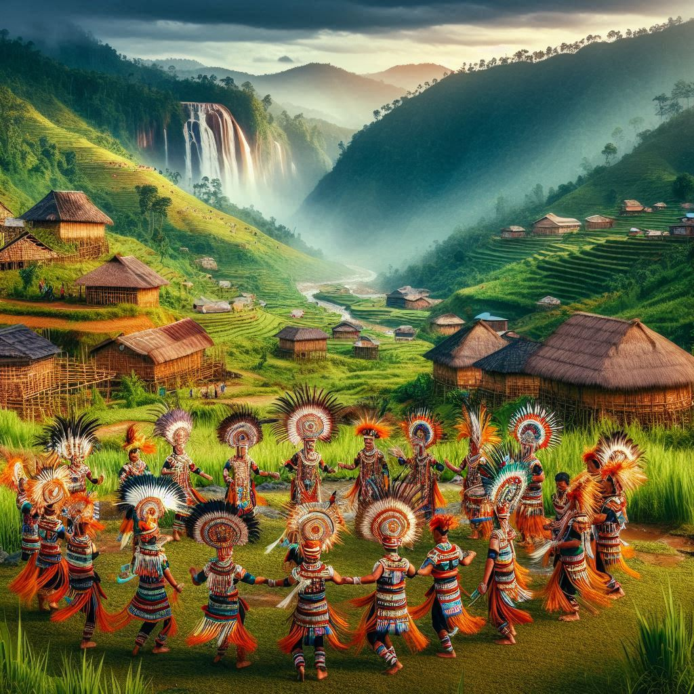
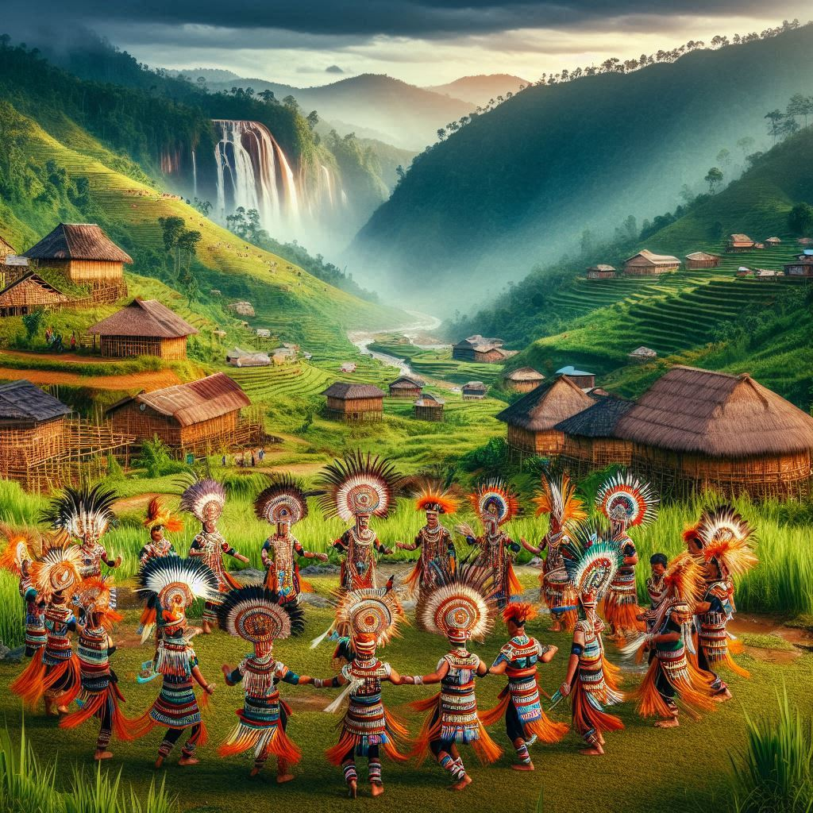

1.Ethnic Diversity and Tribes
- Meghalaya is predominantly home to the Khasi, Jaintia, and Garo tribes.
- Khasi and Jaintia tribes are matrilineal, tracing lineage through the mother.
2.Traditional Attire
- Khasi Women wear the Jainsem, a two-piece drape.
- Garo attire features natural fabrics and vibrant designs.
3.Music and Dance
- Music and dance are integral to celebrations.
- Traditional dances include the Shad Suk Mynsiem and Wangala.
4.Festivals
- Major festivals include Shad Nongkrem and Behdienkhlam.
 

5.Cuisine
- Famous dishes include Jadoh, Nakham Bitchi, and Dohneiiong.
6.Language and Literature
- Languages include Khasi, Garo, and Jaintia, rich in oral traditions.
7.Arts and Crafts
- Famous crafts include bamboo and cane basketry.
8.Spiritual Beliefs
- Christianity and nature worship are predominant.
- Sacred groves hold both spiritual and ecological importance.
Conclusion
Meghalaya's culture blends ancient and modern traditions, offering a vibrant tapestry of life.